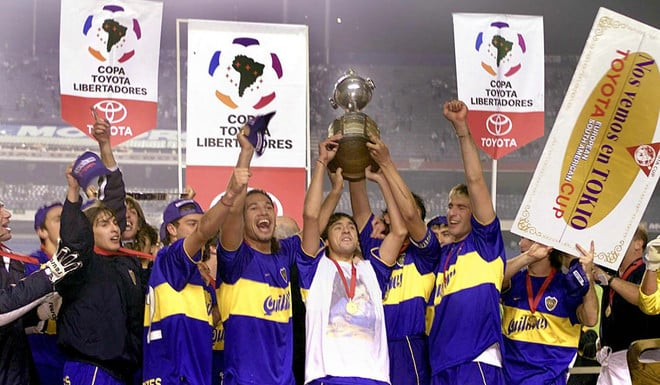
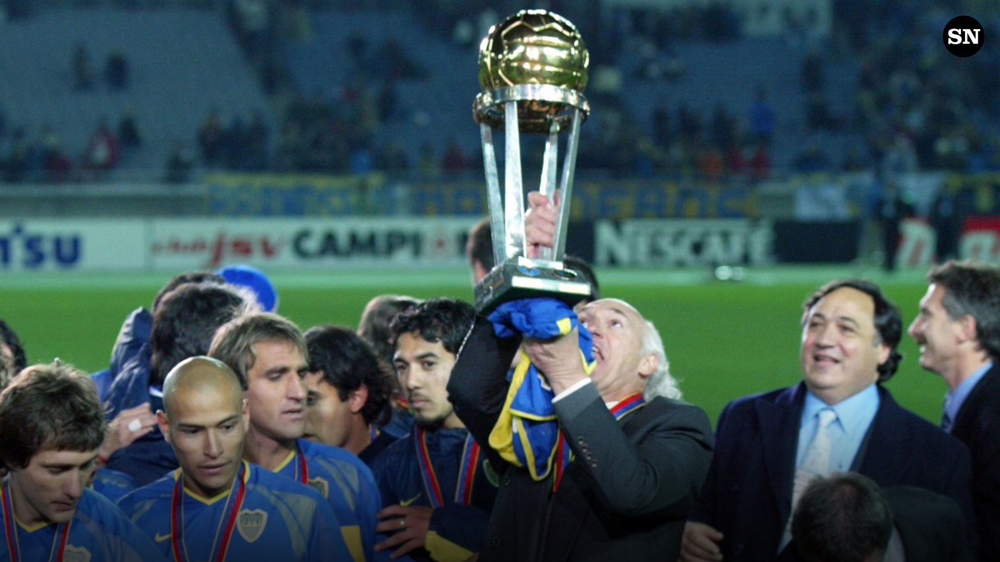
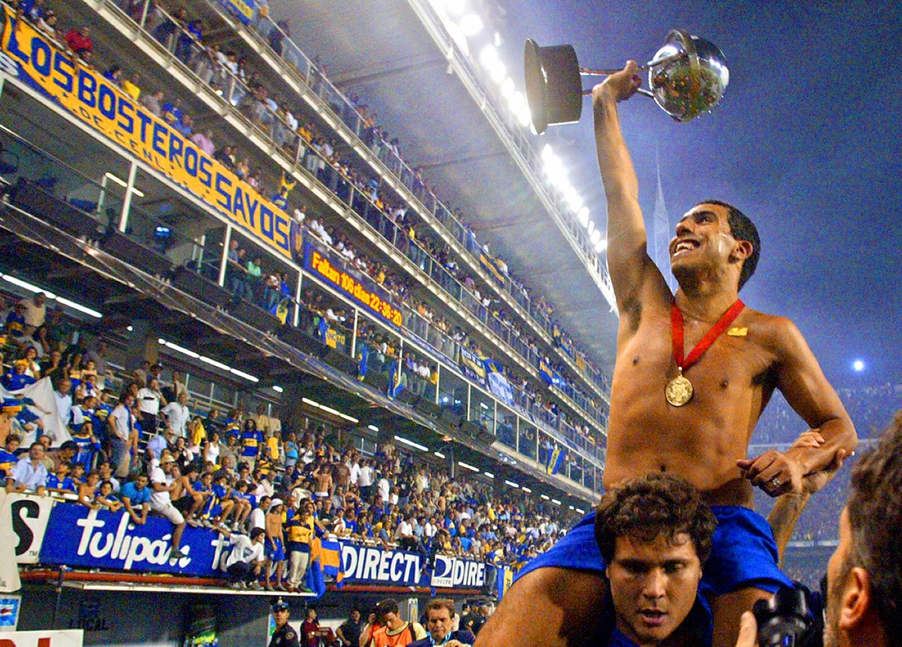
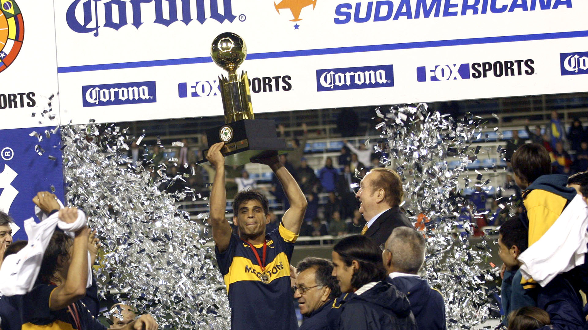
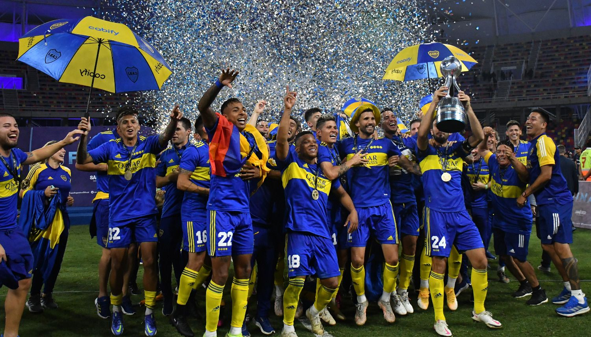

Historia
Fundación y Primeros Años (1905-1910)
Boca Juniors fue fundado el 3 de abril de 1905 en el barrio de La Boca, en Buenos Aires, Argentina. Sus fundadores incluyen a cinco jóvenes inmigrantes italianos: Esteban Baglietto, Alfredo Scarpatti, Santiago Sana, Juan Farenga y Teodoro Farenga. El club tomó su nombre de un mapa que mostraba un puerto llamado "Boca" en la isla de Cerdeña, Italia. En sus primeros años, el club jugó en varios campos de la ciudad, pero en 1916 se mudó a su ubicación actual en el barrio de La Boca. Durante esta época, el club ya estaba comenzando a construir su reputación como un equipo competitivo en el fútbol argentino.
La Era de la Bombonera (1940 en adelante)
El estadio emblemático de Boca Juniors, La Bombonera, se inauguró en 1940. Su diseño único, con gradas empinadas y una forma de herradura, ha sido un elemento clave en la historia del club. La Bombonera se ha convertido en un símbolo de Boca y es famosa por la pasión y el ruido que generan los hinchas, especialmente en la popular "La 12".
Éxito Nacional (1960-1980)
Durante las décadas de 1960 y 1970, Boca Juniors experimentó un período de éxito en el fútbol argentino. Ganaron numerosos campeonatos de liga y copas nacionales, y algunos de los jugadores más icónicos de la historia del club, como Antonio Rattín, Ernesto Grillo, y Roberto Mouzo, contribuyeron a este éxito.
Copa Libertadores (1970-2000)
Boca Juniors es especialmente conocido por su éxito en la Copa Libertadores, el torneo de clubes más prestigioso de América del Sur. El club ganó su primera Copa Libertadores en 1977 y luego la conquistó en varias ocasiones más, destacando el triunfo en 2000, cuando derrotaron al Palmeiras de Brasil en una final memorable.
Diego Maradona (1981-1982)
Uno de los momentos más destacados en la historia de Boca Juniors fue cuando Diego Maradona, una de las figuras más icónicas del fútbol mundial, jugó para el club en 1981 y 1982. Durante su tiempo en Boca, Maradona dejó una marca indeleble en la historia del club antes de su trascendental transferencia al FC Barcelona.
Rivalidad con River Plate
La rivalidad entre Boca Juniors y el Club Atlético River Plate es una de las más intensas en el mundo del fútbol y se conoce como el "Superclásico". Los enfrentamientos entre estos dos equipos son eventos de gran magnitud y capturan la atención de fanáticos de todo el mundo. La rivalidad es alimentada por la pasión y la historia de ambos clubes. El club atletico boca juniors a su clasico rival en la historia le lleva un total de +7 partidos
Logros Recientes (2000 en adelante)
Boca Juniors ha continuado cosechando éxitos en el fútbol argentino y sudamericano en las últimas décadas, ganando títulos de liga y llegando a finales de la Copa Libertadores. El club ha seguido produciendo talento y manteniendo su lugar en la élite del fútbol mundial.
Los Titulos Mas Importantes

1977
Copa Conmebol Libertadores
1977
De la mano de Juan Carlos Lorenzo, y con un equipo inolvidable, Boca lograba su primer título internacional, ante Cruzeiro en Montevideo, y nacía la leyenda.
1978
Un equipo afianzado y demoledor, siempre con Lorenzo como DT, confirmó pergaminos ante Deportivo Cali (0-0 y 4-0) y fue por primera vez bicampeón de América.
2000
De la mano de Carlos Bianchi, Boca volvió a conquistar América tras 22 años en una inolvidable definición por penales ante Palmeiras (2-2 y 0-0) en el estadio Morumbí de San Pablo, Brasil.
2001
Boca siguió su marcha ganadora y logró el bicampeonato de América tras vencer por penales a Cruz Azul (1-0 en México y 0-1 en la Bombonera), en un final infartante.
2003
Carlos Bianchi regresó al club ese año y el ciclo empezó de la mejor manera. Boca ganó los últimos siete partidos seguidos, incluida las finales con Santos en Brasil, y sumó la quinta Copa del club.
2007
De la mano de Miguel Russo, Boca volvió a conquistar América con figuras como Riquelme, Palermo y Palacio. Otra vuelta en Brasil, ante Gremio, tras un 3-0 y 2-0.
De la mano de Juan Carlos Lorenzo, y con un equipo inolvidable, Boca lograba su primer título internacional, ante Cruzeiro en Montevideo, y nacía la leyenda.
1978
Un equipo afianzado y demoledor, siempre con Lorenzo como DT, confirmó pergaminos ante Deportivo Cali (0-0 y 4-0) y fue por primera vez bicampeón de América.
2000
De la mano de Carlos Bianchi, Boca volvió a conquistar América tras 22 años en una inolvidable definición por penales ante Palmeiras (2-2 y 0-0) en el estadio Morumbí de San Pablo, Brasil.
2001
Boca siguió su marcha ganadora y logró el bicampeonato de América tras vencer por penales a Cruz Azul (1-0 en México y 0-1 en la Bombonera), en un final infartante.
2003
Carlos Bianchi regresó al club ese año y el ciclo empezó de la mejor manera. Boca ganó los últimos siete partidos seguidos, incluida las finales con Santos en Brasil, y sumó la quinta Copa del club.
2007
De la mano de Miguel Russo, Boca volvió a conquistar América con figuras como Riquelme, Palermo y Palacio. Otra vuelta en Brasil, ante Gremio, tras un 3-0 y 2-0.

Copa Intercontinental
1977
El equipo del Toto Lorenzo alcanzó la cima del mundo tras empatar 2-2 en la Bombonera y vencer 3-0 a Borussia Mönchengladbach en Alemania.
2000
Boca logró su segunda Copa del Mundo con un triunfo por 2-1 ante el poderoso Real Madrid de España, en Tokio, con dos goles de Martín Palermo.
2003
Otro gigante del mundo como el Milan de Italia quedó de rodillas ante el Boca de Bianchi en Yokohama, Japón, tras el 1-1 en los 90 minutos y la apasionante definición por penales.

Copa Sudamerica
2004
Boca estiró su racha con su primera Sudamericana, tras vencer al Bolívar de Bolivia. El torneo lo empezó con Miguel Brindisi como DT y lo terminó con Jorge Benítez.
2005
Boca defendió el título con éxito ante Los Pumas de México, tras otra inolvidable definición por penales (1-1 acá y allá, y 4-3), que tuvo como figura al arquero Roberto Abbondanzieri.

Recopa Sudamerica
1990
Boca, campeón de la Supercopa, le ganó 1-0 en Miami a Atlético Nacional de Medellín, campeón de la Libertadores 89, y se quedó con la segunda edición de esta Copa.
2005
El Boca de Alfio Basile comenzó su ciclo con éxito, ante el Once Caldas de Colombia (campeón de la Libertadores), con un triunfo por 3-1 y una derrota por 2-1 allá.
2006
El Boca de Basile cerró un ciclo dorado con otra vuelta olímpica internacional, ante el San Pablo, campeón de la Libertadores. Fue 2-1 en La Boca y 2-2 en Brasil.
2008
Boca, campeón de la Libertadores, le ganó 3-1 en Sarandí a Arsenal, titular de la Sudamericana, y tras el 2-2 en casa se consagró campeón. El DT era Carlos Ischia.

Liga Profesional De Argentina
Primera división
35 campeonatos de primera división (29 de la era profesional y 6 de la era amateur) siendo de nuevo el equipo más ganador en la historia.

Boca Juniors tiene 15 copas nacionales y es el maximo ganador de copas nacionales.